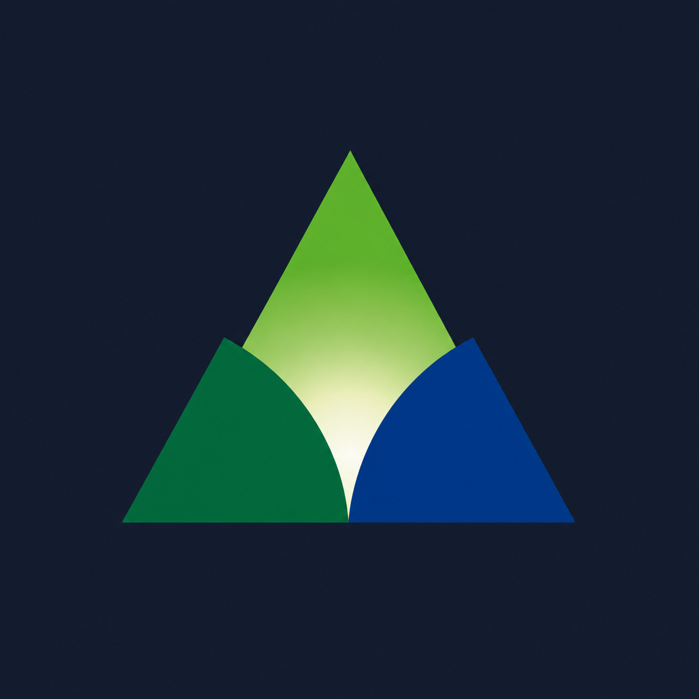
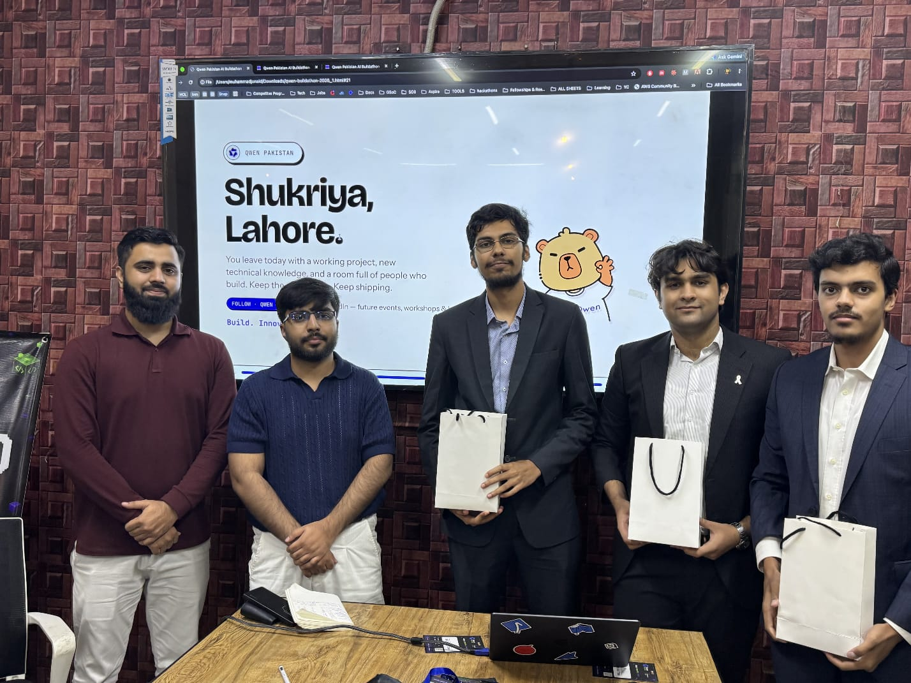

Muhammad Anas Tahir
Undergraduate @ Duke University & Duke Kunshan University — B.S. in Data Science

China, USA, Pakistan and Global
News
View More Projects
Sach Batao (AI Scam Detection)
1st Place (1st of 162+ teams across Pakistan) — AI for Civic Innovation Hackathon
Code for Pakistan | FAST University Islamabad

Sehat Saathi (Health Partner)
1st Place — Qwen AI Hackathon 2026
Qwen | Qwen Pakistan
About Me
I am a dual-degree undergraduate student (sophomore) at Duke University and Duke Kunshan University majoring in Data Science. My research work is on Large Language Models, AI and ML for Science and Environment, and applied AI.
I am interested to apply data-driven solutions to real world scenarios and solve them through computational technologies. I am always open to collaborations and conversations. Feel free to reach out!